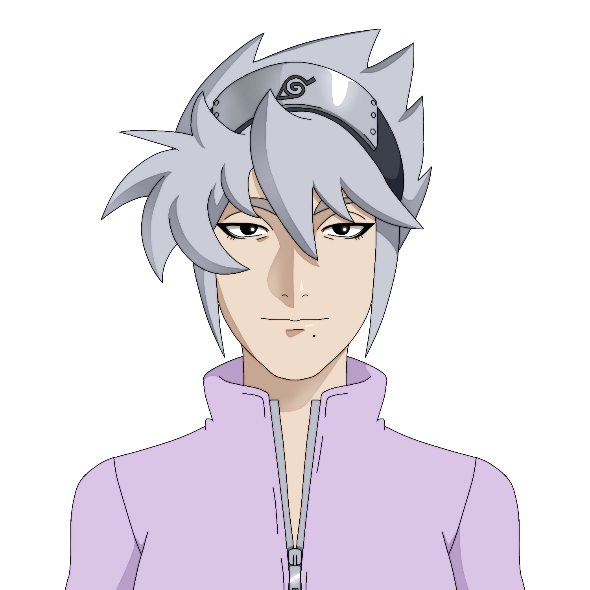

Informações Pessoais
Nome: Kashiya Hatake
Apelido: Garota Nepotismo (por Yūkiyuki), Wagashi Hatake (Jutsu Sexy)
Sexo: Feminino
Idade: 18 anos
Tipo Sanguíneo: O
Altura: 1.70m, 1.66m (corcunda)
Peso: 61kg
Amigos
Shiro Hyūga

Nome: Kashiya Hatake
Apelido: Garota Nepotismo (por Yūkiyuki), Wagashi Hatake (Jutsu Sexy)
Sexo: Feminino
Idade: 18 anos
Tipo Sanguíneo: O
Altura: 1.70m, 1.66m (corcunda)
Peso: 61kg
Ocupação: Ninja
Afiliação: Konohagakure
Registro: 030512
Patente: Jōnin
Idade de Graduação: 12 anos
Idade de Promoção Chūnin: 13 anos
Idade de Promoção Jōnin: 15 anos
Times: •Time 11, integrado por Kashiya Hatake, Yūkiyuki Suzukaze e Shiro Hyūga, liderado por Rock Lee.
•Time Kashiya, formado após a dissolução do Time 11 assim que seus membros se tornaram chūnin, Liderado por Kashiya, ainda chamado vulgarmente de Time 11
Função: Lider, estrategísta
Tipo: Ninja sensor
Classe Principal: Ofensa
Cargo Oficial: Agente especial "cão farejador" das Forças Policiais de Konoha
Característica Especial: Invocação
Clã: Hatake, Uzumaki(ascendência)
Kekkei Genkai: Nenhuma
Natureza de Chakra: Estilo Raio e Estilo Vento
Jutsu Sexy
Mil Anos de Morte
Jutsu de Substituição
Jutsu de Deslocamento Instantâneo
Rasengan
Clones da Sombra
Oito Portões
Selo de Quatro Trigramas
Jutsu de Invocação :Cão Ninja
Estilo Raio: Eletricidade Roxa
Estilo Raio: Ressuscitação Agressiva
Estilo Raio: Sobrecarga de Nervos
Estilo Raio: Clones da Sombra
Estilo Vento: Broca de Abate
Estilo Vento: Rajadas de Vento
Estilo Vento: Repulsão
✭✭✭✭☆
✭✭✭✭✭
✭✭✭☆☆
✭✭✭✭✭
Olfato Aguçado
O Time Kashiya, vulgarmente Time 11, foi o Time formado por Kashiya Hatake, Shiro Hyūga e Yūkiyuki Suzukaze após estes se graduarem na Academia Ninja. O trio foi formado com o objetivo de desenvolver o aspecto físico e social de seus integrantes. O time 11, anteriormente liderado por Rock Lee, e atualmente por Kashiya, é reconhecido por seu alto potencial ofensivo, sua versatilidade e cooperação apesar das cotidianas desavenças, majoritariamente entre Kashiya e Yūkiyuki.
O principal objetivo com a configuração da aquipe era desenvolver o aspecto social de seus integrantes, que eram todos introvertidos: Kashiya e Shiro no sentido mais "tradicional" que as pessoas tem de introversão. Sendo Shiro irracionalmente tímido, ao ponto de parecer indefeso das provocações de colegas de sala, o que o tornava alvo fácil de tormentas, que nunca reagia por timidez; enquanto Kashiya era introvertida no sentido de não interagir com outras crianças por falta de vontade de socializar, também era comum que, por ora, tomasse providências físicas sobre as provocações que vinha a sofrer de vez em quando, pois tinha dificuldades em argumentar vocalmente. Yukiyuki, diferente deles, sempre foi uma criança muito raivosa e agressiva, frequentemente se metendo em brigas, o que lhe proporcionava a exclusão feita pelos próprios colegas de classe de atividades sociais.
O equilibrio do time se encontra no fato de todos os membros se apoiarem mutuamente para cobrir seus pontos fracos. Além de terem uma boa versatilidade em combate ofensivo e habilidades contrastantes.
Patente atual:Jōnin
Posição:Líder
Função:Estrategísta
Classe:Ofensa
Patente atual:Jōnin
Posição:Conselheiro
Função:Curandeiro
Classe:Suporte, defesa
Patente atual:Chūnin
Posição:Líder Substituto
Função:Linha de frente
Classe:Ofensa
O design principal da Kashiya não recebeu grandes mudanças desde 2022. Consiste de uma jaqueta lilás de mangas curtas e gola alta, calças azul-marinho largas com frestas laterais, inspiradas por calças hakama e botas pretas de cano alto. Sob as roupas usa uma armadura de malha junto com munhequeiras do mesmo material.
O design da Kashiya é particularmente um dos favoritos do artista, balanceando teoria das cores(Azul e lilás são cores análogas, porem há um contraste de valores notável entre a parte superior e inferior do design para torná-lo interessante), linguagem de formas(Mais visível no traço próprio do artista. O design da Kashiya é composto principalmente de triângulos contrastados com curvas, que sugerem que ao mesmo tempo que ela é amigável ainda é maliciosa de certo jeito, criando uma silhueta reconhecível e demonstrando a personalidade igualmente cheia de contrastes de Kashiya, que pode ser resumida como passivo-agressivo) e apelo visual (Sendo atraente mas não sexualizada além da conta. Em fato, por não ter muita pele à mostra, muita gente nem vê resquício algum de sexualização no design da Kashiya).
*A sexualização no design da Kashiya é visível nos quadris expostosIsso, junto a algumas outras sutilezas, como o aparelho ortodôntico, fazem da Kashiya uma personagem simples porém facilmente identificável entre outros personagens.
A principal característica da personalidade da Kashiya é que ela é quieta e calma, porém "atentada", sendo o principal agente da corrupção da juventude da Folha devido a não fazer travessuras, mas incentivar outras pessoas - principalmente crianças e pessoas mais ingênuas - a fazê-las para seu divertimento própio sem que sofra consequências. Muito no fundo, Kashiya tem um bom coração, embora sempre escondido sob sua personalidade sarcástica e um pouco maliciosa, fazendo mais o arquétipo do anti-herói, dotada de motivações questionáveis, agressividade desnecessária e uma pitada de egoísmo, até entendendo, mas não se alinhando a ideais antagõnicos.
Apesar das características questionáveis, a Kashiya é reconhecida pela sua honra, responsabilidade(quando sente vontade) e lealdade, o que a aproxima mais de um herói e a impede de ir pro lado dos vilões.
Gyūhi é a invocação de Kashiya, uma vira-lata caramelo de grande porte, que usa uma bandana de Konoha rosa em volta do pescoço.
Gyūhi é uma idosa rabugenta que fez um pacto de sangue com Kashiya assim que essa se tornou chūnin, que apesar de Gyūhi ser uma cadela-ninja, a trata como se fosse seu próprio animal de estimação, deixando ela dormir em sua cama e até tentando brincar com ela, o que faz com que Gyūhi ache a garota realmente chata.
A característica mais marcante de Gyūhi são as sobrancelhas bem destacadas, uma marca de nascença, já que Gyūhi foi inspirada na cadela Domenika de Girls In The House.

Domenika, a inspiração para Gyūhi